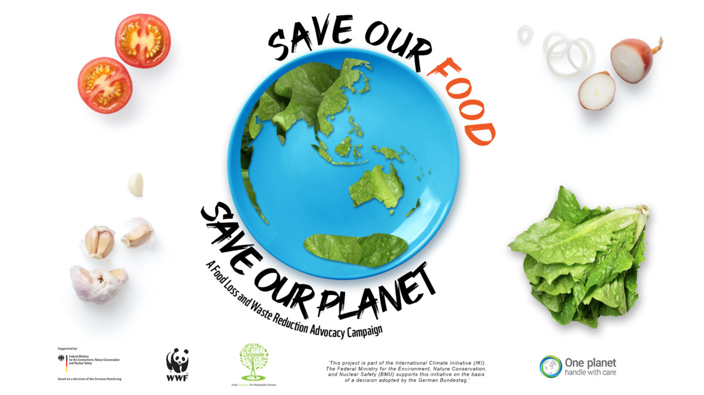

Reduce Food Waste
Food is wasted mainly because of inefficient preparations, bumpy or bad roads, over-selective customers, and inadequate storage facilities. If storage facilities are improved and there are adequate preparations for how the food will be used, less food will be wasted, and there will be a more food secure community. As mentioned earlier, FAO reports that each year, the food wasted globally is about 1.3 billion tonnes.
